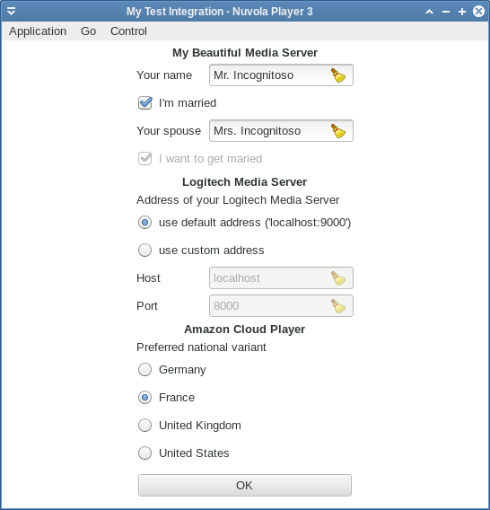

Nuvola Player 3 allows service integrations to store both a persistent configuration and a temporary session information.
Application can use Nuvola.ConfigStorage API to store the persistent configuration. An initialized Nuvola.ConfigStorage object is available as Nuvola.config. Here follows usual work-flow.
Define "constants" with names of configuration key.
... (function(Nuvola) { var ADDRESS = "app.address"; var HOST = "app.host"; var PORT = "app.port"; ...
Set default values in WebApp._onInitAppRunner signal handler. This code is run only once at start-up.
... var WebApp = Nuvola.$WebApp(); WebApp._onInitAppRunner = function(emitter) { Nuvola.WebApp._onInitAppRunner.call(this, emitter); Nuvola.config.setDefault(ADDRESS, "default"); Nuvola.config.setDefault(HOST, ""); Nuvola.config.setDefault(PORT, ""); } ...
Global window object not available
The Nuvola.Core::InitAppRunner signal is executed in a pure JavaScript environment without Window object. Use Nuvola.log() to print logging and debugging messages to terminal instead of console.log().
Get/set values anywhere in your integration script with Nuvola.config.get or Nuvola.config.set.
... WebApp._onInitWebWorker = function(emitter) { Nuvola.WebApp._onInitWebWorker.call(this, emitter); /* Start of example */ console.log(Nuvola.format("Current value {1} = '{2}'", HOST, Nuvola.config.get(HOST))); console.log(Nuvola.format("Current value {1} = '{2}'", PORT, Nuvola.config.get(PORT))); if (!Nuvola.config.hasKey(HOST)) { Nuvola.config.set(HOST, "localhost"); Nuvola.config.set(PORT, "8000"); console.log(Nuvola.format("New value {1} = '{2}'", HOST, Nuvola.config.get(HOST))); console.log(Nuvola.format("New value {1} = '{2}'", PORT, Nuvola.config.get(PORT))); } /* End of example */ var state = document.readyState; if (state === "interactive" || state === "complete") this._onPageReady(); else document.addEventListener("DOMContentLoaded", this._onPageReady.bind(this)); }
If you open JavaScript console in WebKit Web Inspector, you see following output:
# The first run Current value app.host = '' (integrate.js, line 76) Current value app.port = '' (integrate.js, line 77) New value app.host = 'localhost' (integrate.js, line 82) New value app.port = '8000' (integrate.js, line 83) # The second and other runs Current value app.host = 'localhost' (integrate.js, line 76) Current value app.port = '8000' (integrate.js, line 77)
Always use Nuvola.config.setDefault()
It's a programmer's error to manipulate with configuration keys without default values. The behavior of Nuvola.config.get() is undefined in that case, i.e. it can do and return anything, throw error or launch a nuclear weapon.
Implementation detail
The configuration is stored in a JSON file
~/.config/nuvolaplayer3/apps_data/<app_id>/config.json.
Application can use Nuvola.SessionStorage API to store the temporary session information. An initialized Nuvola.SessionStorage object is available as Nuvola.session. Here follows usual work-flow.
Define constants with names of session keys.
... (function(Nuvola) { var ADDRESS = "app.address"; var HOST = "app.host"; var PORT = "app.port"; ...
Set default values in WebApp._onInitAppRunner signal handler. This code is run only once at start-up.
... var WebApp = Nuvola.$WebApp(); WebApp._onInitAppRunner = function(emitter) { Nuvola.WebApp._onInitAppRunner.call(this, emitter); Nuvola.session.setDefault(ADDRESS, "default"); Nuvola.session.setDefault(HOST, ""); Nuvola.session.setDefault(PORT, ""); } ...
Global window object not available
The Nuvola.Core::InitAppRunner signal is executed in a pure JavaScript environment without Window object. Use Nuvola.log() to print logging and debugging messages to terminal instead of console.log().
Get/set values anywhere in your integration script with Nuvola.session.get or Nuvola.session.set.
... WebApp._onInitWebWorker = function(emitter) { Nuvola.WebApp._onInitWebWorker.call(this, emitter); /* Start of example */ console.log(Nuvola.format("Current value {1} = '{2}'", HOST, Nuvola.session.get(HOST))); console.log(Nuvola.format("Current value {1} = '{2}'", PORT, Nuvola.session.get(PORT))); if (!Nuvola.session.hasKey(HOST)) { Nuvola.session.set(HOST, "localhost"); Nuvola.session.set(PORT, "8000"); console.log(Nuvola.format("New value {1} = '{2}'", HOST, Nuvola.session.get(HOST))); console.log(Nuvola.format("New value {1} = '{2}'", PORT, Nuvola.session.get(PORT))); } /* End of example */ var state = document.readyState; if (state === "interactive" || state === "complete") this._onPageReady(); else document.addEventListener("DOMContentLoaded", this._onPageReady.bind(this)); }
If you open JavaScript console in WebKit Web Inspector, you see following output:
# When a new instance loads Current value app.host = '' (integrate.js, line 76) Current value app.port = '' (integrate.js, line 77) New value app.host = 'localhost' (integrate.js, line 82) New value app.port = '8000' (integrate.js, line 83) # When the page is reloaded Current value app.host = 'localhost' (integrate.js, line 76) Current value app.port = '8000' (integrate.js, line 77)
Always use Nuvola.session.setDefault()
It's a programmer's error to manipulate with configuration keys without default values. The behavior of Nuvola.session.get() is undefined in that case, i.e. it can do and return anything, throw error or launch a nuclear weapon.
If you require input from user, take look at Initialization and preferences forms.
